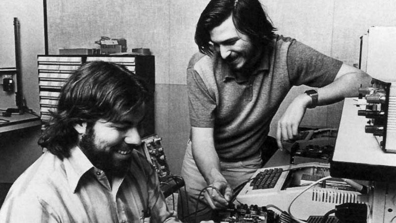

Steve Jobs
The man who changed the personal computer industry

Steve Jobs, right side and Steve Wozniak, left side, two co-founders
of Apple.
Here's a timeline of Steve Jobs life:
- 24 Feb 1955 - Steven Paul was born in San Francisco, the son of Abdulfattah Jandali and Joanne Schieble. He is quickly adopted by Paul and Clara Jobs.
- 1969 - Steve Jobs meets Steve Wozniak, 5 years older, through a mutual friend. Woz and Steve share a love of electronics, Bob Dylan, and pranks.
- Mar 1976 - Woz and Steve show the early Apple I board at the Homebrew Computer Club.
- 28 Aug 1976 - Steve Jobs and Woz show off the Apple I at the Personal Computing Festival in Atlantic City, with help from Dan Kottke.
- 1978 - At Apple, work starts on the Apple III and the Lisa, while Jef Raskin begins The Book of Macintosh.
- May 1980 - Apple launches the Apple III, which will prove a disastrous flop.
- Jan 1983 - Launch of the Lisa computer. The Lisa team later merges with the Mac team under Steve Jobs's leadership.
- 8 Apr 1983 - PepsiCo CEO John Sculley becomes Apple's CEO after having been wooed by Steve Jobs for several months.
- 17 Sep 1985 - Steve Jobs resigns from Apple and starts NeXT with five other refugees from Apple. Apple announces it will sue NeXT.
- Dec 1996 - Apple, which was desperately looking for a modern operating system to buy, eventually buys NeXT for $400 million. Steve Jobs is named "informal adviser" to Apple CEO Gil Amelio.
- 6 May 1998 - Steve Jobs introduces Apple's revolutionary iMac at the Flint Center auditorium in Cupertino, 14 years after he had introduced the Macintosh at that same place.
- 5 Oct 1999 - Introduction of the iMac DVs and of iMovie, the first of Apple's first Digital Hub app.
- 28 Apr 2003 - Apple opens the revolutionary online iTunes Music Store in the US, after negotiating landmark deals with all major music labels.
- 15 Jan 2008 - At Macworld 2008, Steve Jobs introduces MacBook Air, with the tagline 'the world's thinnest notebook'. Three years later, it will come to redefine all of Apple's notebook product line.
- 24 Aug 2011 - Steve Jobs resigns as CEO of Apple, with the words 'I have always said if there ever came a day when I could no longer meet my duties and expectations as Apple's CEO, I would be the first to let you know. Unfortunately, that day has come.' Tim Cook becomes Apple CEO.
- 5 Oct 2011 - Steve Jobs dies at home, surrounded by his family.
"Your time is limited, so don't waste it living someone else's life. Don't be trapped by dogma - which is living with the results of other people's thinking. Don't let the noise of others' opinions drown out your own inner voice. And most important, have the courage to follow your heart and intuition."